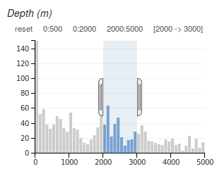
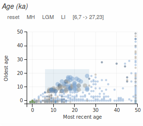
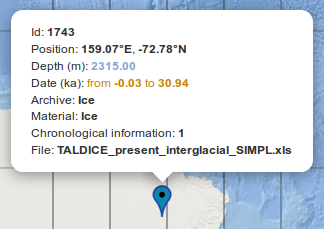
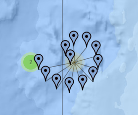
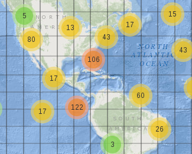

You can refine your research by applying filters on dimension such as depth dimension, oldest age of the proxies and species
of the proxies.

To cancel a filter, click on "reset".

You can display a proxy description (id, position, dates, ...) when you pass the mouse over its position.
In the same time, the proxy is focussed with a bold style from the list of proxies that contains the proxy,
the species and the reference of the paper.

When several proxies share the same location, they appear as a group of proxies called cluster.
Zoom to the last zoom level then click on a cluster to display all proxies.

Clusters are colored in red when they represent more than 100 proxies, colored in yellow when more than 10 then colored in green.